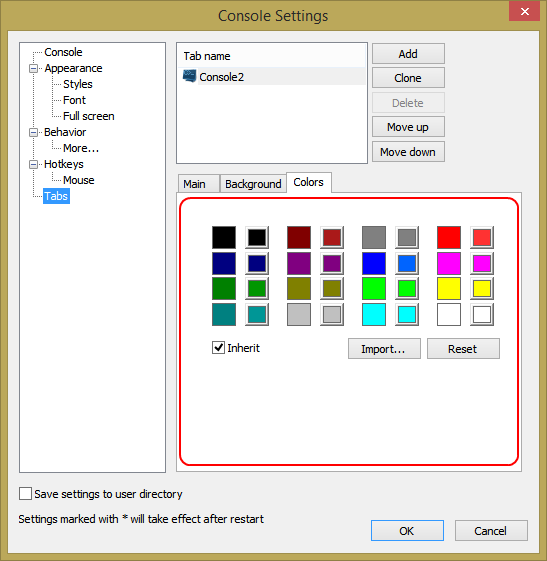

These squares allow you to remap default 16 console colors. Left square shows the inherited color. Clicking on the right square will bring up a color picker allowing you to select a new color.
Background text opacity
The opacity of the background color can be adjusted.
Import...
Imports color map from another configuration file.
Reset
Reset button will reset colors to their default values.
Inherit
If checked, the tab uses inherited colors map.
Set as default
Set the current tab's colors map as default. Tabs, having Inherit checked, will use this colors map.
Style
Select cursor style from the list.
Color
Click on the square to select cursor color.
Inherit
If checked, the tab uses inherited cursor.
Set as default
Set the current tab's cursor as default. Tabs, having Inherit checked, will use this cursor.